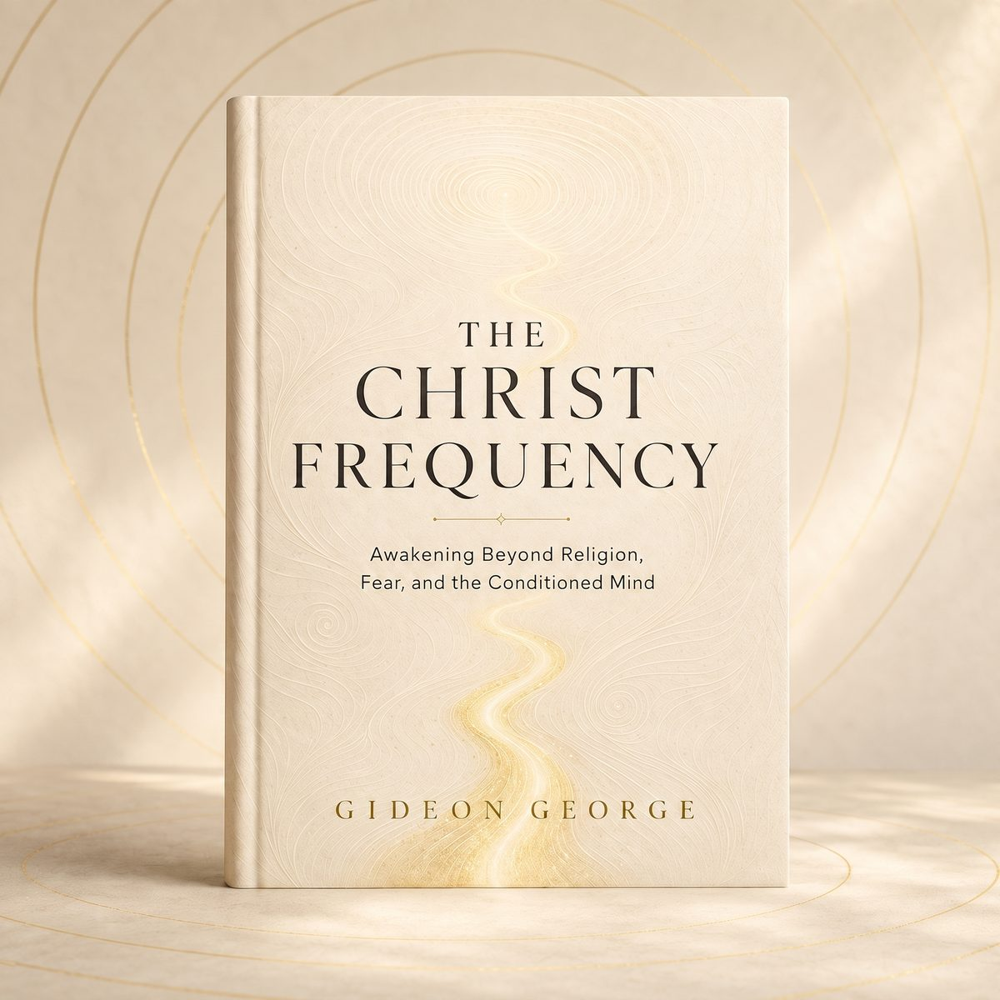

Fear stops sounding like God
You learn to tell the difference between reverence and dread, and much of the weight you have been carrying as devotion turns out to be neither.
The Christ Frequency · with Gideon George
For everyone who still believes but has not felt that nearness in a long time. A free 7-day guide out of fear, noise and the pressure to perform, back to the quiet you remember.
Would rather not wait? Buy the book now: Nigeria & Africa · International

If you are honest about it
None of that means your faith is failing. It usually means something in you has outgrown the volume it was handed, and is listening for a deeper one.
The turn
That is the Christ Frequency. Not a sound. Not a number of hertz. A steady orientation of the heart: love instead of fear, truth instead of pretence, presence instead of performance. Something you can actually tune back to on a normal Tuesday, in traffic, mid-argument, halfway through a hard week.
Nothing about your faith has to be thrown away. Something in it has to be met directly. It begins with four movements you will practise all week:
Your free gift
A short, beautiful PDF that walks you through one week of tuning. Six minutes a day, no theology exam, no guilt if you miss a morning.
Drawn straight from the practices in the full book: the same PAUSE, OBSERVE, ALIGN, EMBODY framework readers say is the part they keep returning to. Yours free, because the first week should never be behind a payment.
Available now
Five parts. Eighteen chapters. One long, honest conversation about what happens when fear finally loosens its grip on your faith.
You learn to tell the difference between reverence and dread, and much of the weight you have been carrying as devotion turns out to be neither.
You can examine what you inherited without losing Christ in the process. Honest looking turns out to be a form of faith, not a betrayal of it.
Not a mood you wait for. A frequency you return to, on purpose, in the middle of ordinary life, with people who are difficult and days that go wrong.
Yours the moment you buy. Professionally formatted PDF and EPUB, delivered instantly. The free guide is an alternative, not a step on the way — start wherever you like.
₦9,963 in Nigeria · $9.63 internationally
The invitation is not to believe harder. It is to look again.
Before you enter your email
Yes, and it does not ask you to leave it. This is inclusive spiritual reflection, not denominational theology. Catholics, Pentecostals, Anglicans, Baptists, people who have not been inside a church in years, and people who are not sure what they are anymore have all found their way in. Nothing here requires you to accept a new doctrine.
No. If you are drawn to Christ but weary of religious control, you are exactly who this was written for. If you are simply curious about consciousness, fear and inner transformation, the practices work without you signing anything.
No, and I want to be clear about that. “Frequency” here is metaphor for a recurring orientation of consciousness: love rather than fear, truth rather than pretence, compassion rather than separation. It is not a scientific claim, and it is not a substitute for medical or psychological care.
The 7-Day Christ Frequency Starter Guide as a PDF, sent to your inbox within a minute or two of signing up. It reads well on a phone. After that you will hear from me occasionally with reflections. Never daily, never noise.
Yes. Your address is used to send you the guide and occasional reflections, nothing else. It is never sold, rented or shared. Every email has a one-click unsubscribe, and leaving costs you nothing. You keep the guide.
No. The guide is complete in itself and free with no conditions attached. If the week opens something and you want to go further, the full book is there. If not, you are welcome to stay on the free side of the door for as long as you like.
One small step
You have carried the tightness in your chest and the flatness in your prayers for a long time. One week of honest pausing will not undo a lifetime, but it is where every real change any of us has made actually started.
Ready for the book itself? Nigeria & Africa · International
Seven days. Six minutes each. Free, and yours to keep whatever you decide about the book.